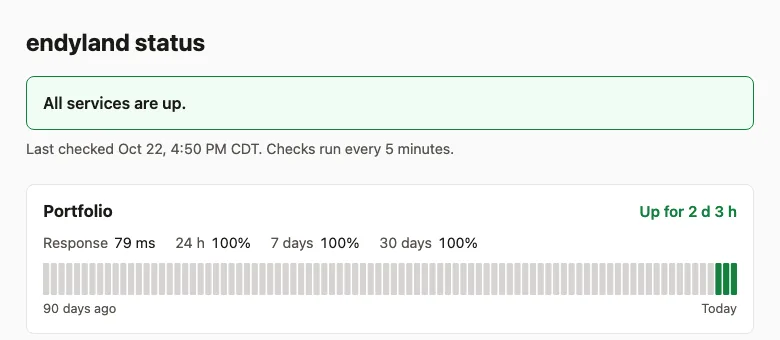

Infrastructure
endyland hosting and status page
The hosting, status page and backups behind endyland.com.
- Private repo

By the numbers
- 5 minbetween health checks
What I did
- Host the site on Cloudflare Pages, with Workers and tunnels for the rest.
- Built a status page that checks every service every 5 minutes.
- Deploys run on their own when new code lands, after the site checks pass.
- Set up backups for the services behind the site.